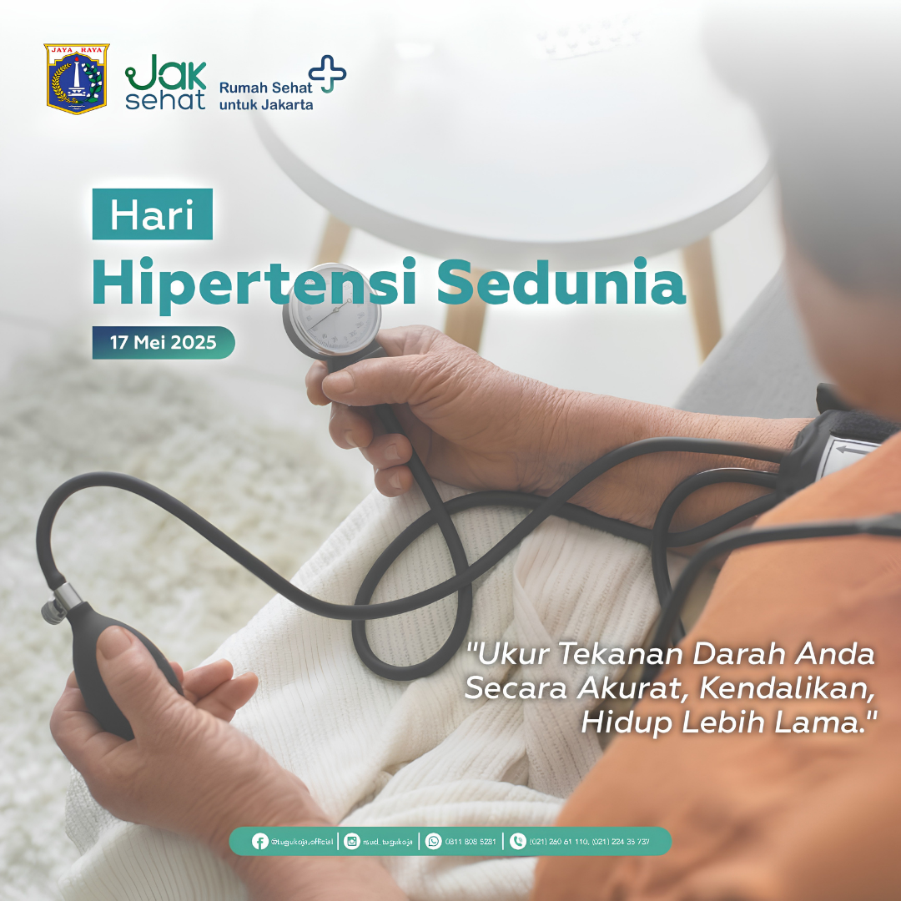

Standar Pelayanan & Maklumat Mutu
Komitmen transparansi, akuntabilitas, dan mutu prima dalam memberikan pelayanan kesehatan bagi seluruh masyarakat.
local_hospital
Fasilitas & Sarana Medis
Informasi lengkap alat medis terkini, ketersediaan tempat tidur, dan sarana pendukung kenyamanan pasien selama masa perawatan.
Lihat Detail Fasilitas
arrow_forward
medical_services
clean_hands
Kepatuhan Kebersihan Tangan
Standar kebersihan ketat untuk memastikan keselamatan pasien dan pencegahan infeksi nosokomial.
Lihat Video
open_in_new
description
Standar Operasional Prosedur
Panduan tata kelola layanan medis yang terstruktur demi akurasi dan kecepatan tindakan medis.
Lihat Detail
arrow_forward
open_in_new
Eksternal
security
Manajemen Resiko
Sistem mitigasi dan penanganan resiko medis yang komprehensif untuk perlindungan pasien dan staf.
Lihat Detail
open_in_new
open_in_new
Eksternal
verified_user
Anti Gratifikasi
Zona integritas dengan pelayanan transparan, adil, dan sepenuhnya bebas dari pungutan liar.
Baca Kebijakan
open_in_new